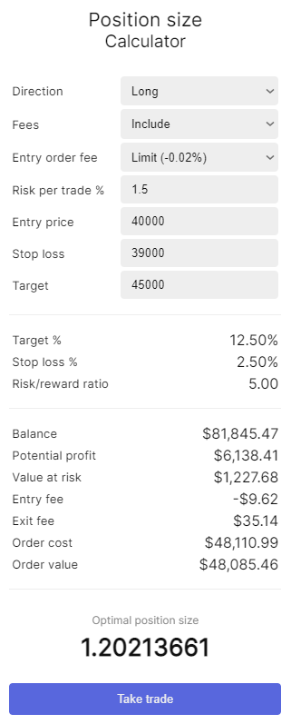
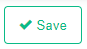

Position size calculator
Have you ever asked yourself what your position size should be if you have an entry, stoploss, and a maximum amount of risk you want to take?
Our position size calculator will answer that question for you. If you have created a trade plan and have an entry, target, and stop loss, your optimal position size will be calculated automatically based on how much risk you are willing to take.
Location
The position size calculator can be found under the calculator icon on the top-right of our app, next to the username of the account.

Calculation form
Fill in the entry and stoploss price of the trade setup on your price chart. Target price is not required.

After clicking take trade, all the variables such as entry, exit, stoploss and target will be forwarded to the trade setup page where the trade can be saved by clicking on the save button.

More information about the trade setup page can be found here.
Variables
Variables to type in:
| Variable | Description |
|---|---|
| Direction | The direction of the trade, either LONG or SHORT. |
| Fees | Includes fee calculations and subtract these from the position size. The percentage is retrieved from the defined fee in the portfolio settings. |
| Risk % | Percentage of the portfolio that is lost after the position is stopped out (excl. slippage). |
| Entry | Price at which the position is purchased. |
| Stop loss | Price at which the position should be exited when the trade turns out to be a loss. |
| Target | Price at which you intent to take profit. |
Calculations
Based on the provided variables, the following values are calculated:
| Calculation | Description |
|---|---|
| Target % | The distance between the entry and the target price in percentage. |
| Stop loss % | The distance between the entry and the stoploss price in percentage. |
| Value at risk | The amount that is lost after the position is stopped out (excl. slippage). |
| Entry fee | The amount of fee that is paid to open the position. |
| Exit fee | The amount of fee that is paiid to cover the position with a stop loss (excl. slippage). For this instance, the fee is always based on a market-order. |
| Order cost | The value of the position plus the fee that is paid to open the position. |
| Order value | The value of the position. |